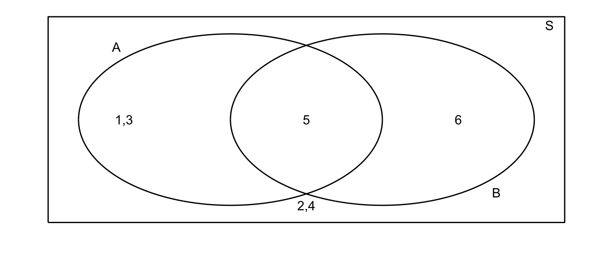
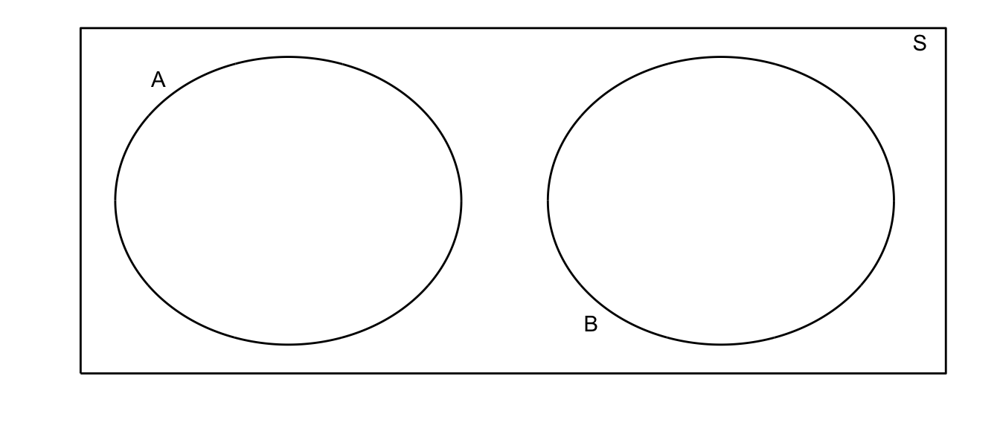
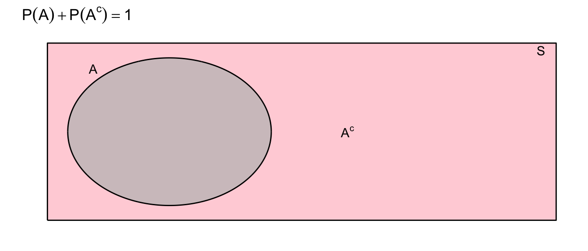
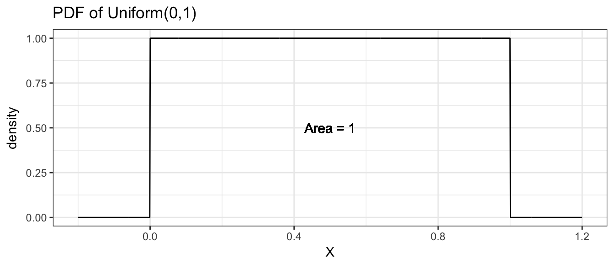

Chapter 2 Probability
# Every chapter, we will load all the librarys we will use at the beginning
# of the chapter.
library(ggplot2) # graphing functions
library(dplyr) # data summary toolsWe need to work out the mathematics of what we mean by probability. To begin with we first define an outcome. An outcome is one observation from a random process or event. For example we might be interested in a single roll of a six-side die. Alternatively we might be interested in selecting one NAU student at random from the entire population of NAU students.
2.1 Introduction to Set Theory
Before we jump into probability, it is useful to review a little bit of set theory.
Events are properties of a particular outcome. For a coin flip, the event “Heads” would be the event that a heads was flipped. For the single roll of a six-sided die, a possible event might be that the result is even. For the NAU student, we might be interested in the event that the student is a biology student. A second event of interest might be if the student is an undergraduate.
1.1.1 Venn Diagrams
Let \(S\) be the set of all outcomes of my random trial. Suppose I am interested in two events \(A\) and \(B\). The traditional way of representing these events is using a Venn diagram.

For example, suppose that my random experiment is rolling a fair 6-sided die once. The possible outcomes are \(S=\{1,2,3,4,5,6\}\). Suppose I then define events \(A=\) roll is odd and \(B=\) roll is 5 or greater. In this case our picture is:

All of our possible events are present, and distributed amongst our possible events.
1.1.2 Composition of events
I am often interested in discussing the composition of two events and we give the common set operations below.
Union: Denote the event that either \(A\) or \(B\) occurs as \(A\cup B\).

Denote the event that both \(A\) and \(B\) occur as \(A\cap B\)

Denote the event that \(A\) does not occur as \(\bar{A}\) or \(A^{C}\) (different people use different notations)

Definition 1. Two events \(A\) and \(B\) are said to be mutually exclusive (or disjoint) if the occurrence of one event precludes the occurrence of the other. For example, on a single roll of a die, a two and a five cannot both come up. For a second example, define \(A\) to be the event that the die is even, and \(B\) to be the event that the die comes up as a \(5\).

2.2 Probability Rules
2.2.1 Simple Rules
We now take our Venn diagrams and use them to understand the rules of probability. The underlying idea that we will use is the the probability of an event is the area in the Venn diagram.
Definition 2. Probability is the proportion of times an event occurs in many repeated trials of a random phenomenon. In other words, probability is the long-term relative frequency.
Fact. For any event \(A\) the probability of the event \(P(A)\) satisfies \(0\le P(A) \le 1\) because proportions always lie in \([0,1]\).
Because \(S\) is the set of all events that might occur, the area of our bounding rectangle will be \(1\) and the probability of event \(A\) occurring will be represented by the area in the circle \(A\).
Fact. If two events are mutually exclusive, then \(P(A\cup B)=P(A)+P(B)\)

Example. Let \(R\) be the sum of two different colored dice. Suppose we are interested in \(P(R \le 4)\). Notice that the pair of dice can fall 36 different ways (6 ways for the first die and six for the second results in 6x6 possible outcomes, and each way has equal probability \(1/36\). Because the dice cannot simultaneously sum to \(2\) and to \(3\), we could write \[\begin{aligned} P(R \le 4 ) &= P(R=2)+P(R=3)+P(R=4) \\ &= P(\left\{ 1,1\right\} )+P(\left\{ 1,2\right\} \mathrm{\textrm{ or }}\left\{ 2,1\right\} )+P(\{1,3\}\textrm{ or }\{2,2\}\textrm{ or }\{3,1\}) \\ &= \frac{1}{36}+\frac{2}{36}+\frac{3}{36} \\ &= \frac{6}{36} \\ &= \frac{1}{6} \end{aligned}\]
Fact. \(P(A)+P(\bar{A})=1\) 
The above statement is true because the probability of whole space \(S\) is one (remember \(S\) is all possible outcomes), then either we get an outcome in which \(A\) occurs or we get an outcome in which \(A\) does not occur.
Fact. \(P(A\cup B)=P(A)+P(B)-P(A\cap B)\)
The reason behind this fact is that if there is if \(A\) and \(B\) are not disjoint, then some area is added twice when I calculate \(P\left(A\right)+P\left(B\right)\). To account for this, I simply subtract off the area that was double counted.

Fact 3. \(P(A)=P(A\cap B)+P(A\cap\bar{B})\)

This identity is just breaking the event \(A\) into two disjoint pieces.
2.2.2 Conditional Probability
We are given the following data about insurance claims. Notice that the data is given as \(P(\;Category\;\cap\;PolicyType\;)\) which is apparent because the sum of all the elements in the table is \(100\%\)
| \(\,\) | Fire | Auto | Other |
|---|---|---|---|
| Fraudulant | 6% | 1% | 3% |
| non-Fraudulant | 14% | 29% | 47% |
Summing across the rows and columns, we can find the probabilities of for each category and policy type.
| \(\,\) | Fire | Auto | Other | \(\,\) |
|---|---|---|---|---|
| Fraudulant | 6% | 1% | 3% | 10% |
| non-Fraudulant | 14% | 29% | 47% | 90% |
| \(\,\) | 20% | 30% | 50% | 100% |
It is clear that fire claims are more likely fraudulent than auto or other claims. In fact, the proportion of fraudulent claims, given that the claim is against a fire policy is \[\begin{aligned} P(\textrm{ Fraud }|\textrm{ FirePolicy }) &= \frac{\textrm{proportion of claims that are fire policies and are fraudulent}}{\textrm{proportion of fire claims}} \\ &= \frac{6\%}{20\%}\\ & \\ &= 0.3 \end{aligned}\]
In general we define conditional probability (assuming \(P(B) \ne 0\)) as \[P(A|B)=\frac{P(A\cap B)}{P(B)}\] which can also be rearranged to show \[\begin{aligned} P(A\cap B) &= P(A\,|\,B)\,P(B) \\ &= P(B\,|\,A)\,P(A) \end{aligned}\] Because the order doesn’t matter and \(P\left(A\cap B\right)=P\left(B\cap A\right)\).
Using this rule, we might calculate the probability that a claim is an Auto policy given that it is not fraudulent. \[\begin{aligned} P\left(\,Auto\;|\;NotFraud\,\right) &= \frac{P\left(\,Auto\;\cap\;NotFraud\right)}{P\left(\,NotFraud\,\right)} \\ &= \frac{0.29}{0.9} \\ & \\ &= 0.3\bar{2} \end{aligned}\]
Definition 4. Two events \(A\) and \(B\) are said to be independent if \(P(A|B)=P(A)\;\;\textrm{and}\;\;P(B|A)=P(B)\).
What independence is saying that knowing the outcome of event \(A\) doesn’t give you any information about the outcome of event \(B\).
In simple random sampling, we assume that any two samples are independent. In cluster sampling, we assume that samples within a cluster are not independent, but clusters are independent of each other.
Fact 5. If \(A\) and \(B\) are independent events, then \(P(A\cap B) = P(A|B)P(B) = P(A)P(B)\).
Example 6. Suppose that we are interested in the relationship between the color and the type of car. Specifically I will divide the car world into convertibles and non-convertibles and the colors into red and non-red.
Suppose that convertibles make up just 10% of the domestic automobile market. This is to say \(P(\;Convertable\;)=0.10\). Of the non-convertibles, red is not unheard of but it isn’t common either. So suppose \(P(\;Red\;|\;NonConvertable\;)=0.15\). However red is an extremely popular color for convertibles so let \(P(\;Red\;|\;Convertable\;)=0.60\).
Given the above information, we can create the following table:
| \(\,\) | Convertable | Not Convertable | \(\,\) |
|---|---|---|---|
| Red | |||
| Not Red | |||
| \(\,\) | 10% | 90% | 100% |
We can fill in some of the table using our the definition of conditional probability. For example: \[\begin{aligned} P\left(Red\,\cap\,Convertable\right) &= P\left(Red\,|\,Convertable\right)\,P\left(Convertable\right) \\ &= 0.60*0.10 \\ &= 0.06 \end{aligned}\]
Lets think about what this conditional probability means. Of the \(90\%\) of cars that are not convertibles, \(15\%\) those non-convertibles are red and therefore the proportion of cars that are red non-convertibles is \(0.90*0.15=0.135\). Of the \(10\%\) of cars that are convertibles, \(60\%\) of those are red and therefore proportion of cars that are red convertibles is \(0.10*0.60=0.06\). Thus the total percentage of red cars is actually \[\begin{aligned}P\left(\,Red\,\right) &= P\left(\;Red\;\cap\;Convertible\;\right)+P\left(\,Red\,\cap\,NonConvertible\,\right)\\ &= P\left(\,Red\,|\,Convertable\,\right)P\left(\,Convertible\,\right)+P\left(\,Red\,|\,NonConvertible\,\right)P\left(\,NonConvertible\,\right)\\ &= 0.60*0.10+0.15*0.90\\ &= 0.06+0.135\\ &= 0.195 \end{aligned}\] So when I ask for \(P(\;red\;|\;convertable\;)\), I am narrowing my space of cars to consider only convertibles. While there percentage of cars that are red and convertible is just 6% of all cars, when I restrict myself to convertibles, we see that the percentage of this smaller set of cars that are red is 60%.
Notice that because \(P\left(Red\right)=0.195\ne0.60=P\left(Red\,|\,Convertable\right)\) then the events \(Red\) and \(Convertable\) are not independent.
2.2.3 Summary of Probability Rules
\[0 \le P\left(A\right) \le 1\]
\[P\left(A\right)+P\left(\bar{A}\right)=1\] \[P\left(A\cup B\right) = P\left(A\right)+P\left(B\right)-P\left(A\cap B\right)\] \[P\left(A\cap B\right) = \begin{cases} P\left(A\,|\,B\right)P\left(B\right)\\ P\left(B\,|\,A\right)P\left(A\right)\\ P(A)P(B)\;\; & \textrm{ if A,B are independent} \end{cases}\]
\[P\left(A\,|\,B\right) = \frac{P\left(A\cap B\right)}{P\left(B\right)}\]
2.3 Discrete Random Variables
The different types of probability distributions (and therefore your analysis method) can be divided into two general classes:
Continuous Random Variables - the variable takes on numerical values and could, in principle, take any of an uncountable number of values. In practical terms, if fractions or decimal points in the number make sense, it is usually continuous.
Discrete Random Variables - the variable takes on one of small set of values (or only a countable number of outcomes). In practical terms, if fractions or decimals points don’t make sense, it is usually discrete.
Examples:
- Presence or Absence of wolves in a State?
- Number of Speeding Tickets received?
- Tree girth (in cm)?
- Photosynthesis rate?
2.3.1 Introduction to Discrete Random Variables
The following facts hold for discrete random variables:
- The probability associated with every value lies between 0 and 1
- The sum of all probabilities for all values is equal to 1
- Probabilities for discrete RVs are additive. i.e., \(P(3\textrm{ or }4)=P(3)+P(4)\)
2.3.1.1 Expected Value
Example: Consider the discrete random variable \(S\), the sum of two fair dice.

We often want to ask ‘What is expected value of this distribution?’ You might think about taking a really, really large number of samples from this distribution and then taking the mean of that really really big sample. We define the expected value (often denoted by \(\mu\)) as a weighted average of the possible values and the weights are the proportions with which those values occur. \[\mu=E[S] = \sum_{\textrm{possible }s}\;s\cdot P\left(S=s\right)\] In this case, we have that \[\begin{aligned} \mu = E[S] &= \sum_{s=2}^{12}s\cdot P(S=s) \\ &= 2\cdot P\left(S=2\right)+3\cdot P\left(S=3\right)+\dots+11\cdot P\left(S=11\right)+12\cdot P\left(S=12\right) \\ &= 2\left(\frac{1}{36}\right)+3\left(\frac{2}{36}\right)+\dots+11\left(\frac{2}{36}\right)+12\left(\frac{1}{36}\right) \\ &= 7 \end{aligned}\]
2.3.1.2 Variance
Similarly we could define the variance of \(S\) (which we often denote \(\sigma^{2}\)) as a weighted average of the squared-deviations that could occur. \[ \sigma^{2}=V[S] = \sum_{\textrm{possible }s}\; (s-\mu)^2 \cdot P\left(S=s\right)\] which in this example can be calculated as \[\begin{aligned} \sigma^{2}=V[S] &= \sum_{s=2}^{12}\left(s-\mu\right)^{2}P(S=s) \\ &= (2-7)^{2}\left(\frac{1}{36}\right)+(3-7)^{2}\left(\frac{2}{36}\right)+\dots+(12-7)^{2}\left(\frac{1}{36}\right) \\ &= \frac{35}{6}=5.8\bar{3} \end{aligned}\]
We could interpret the expectation as the sample mean of an infinitely large sample, and the variance as the sample variance of the same infinitely large sample. These are two very important numbers that describe the distribution.
Example 7. My wife is a massage therapist and over the last year, the number of clients she sees per work day (denoted Y ) varied according the following table:
| Number of Clients | 0 | 1 | 2 | 3 | 4 |
|---|---|---|---|---|---|
| Frequency/Probability | 0.30 | 0.35 | 0.20 | 0.10 | 0.05 |
distr <- data.frame( clients = c( 0, 1, 2, 3, 4 ), # two columns
probability = c(0.3, 0.35, 0.20, 0.10, 0.05 ) ) #
ggplot(distr, aes(x=clients)) + # graph with clients as the x-axis
geom_point(aes(y=probability)) + # where the dots go
geom_linerange(aes(ymax=probability, ymin=0)) + # the vertical lines
theme_bw() # set background color... Because this is the long term relative frequency of the number of clients (over 200 working days!), it is appropriate to interpret these frequencies as probabilities. This table and graph is often called a probability mass function (pmf) because it lists how the probability is spread across the possible values of the random variable. We might next ask ourselves what is the average number of clients per day? It looks like it ought to be between 1 and 2 clients per day. \[\begin{aligned} E\left(Y\right)
&= \sum_{\textrm{possible }y}y\,P\left(Y=y\right) \\
&= \sum_{y=0}^{4}y\,P\left(Y=y\right) \\
&= 0\,P\left(Y=0\right)+1\,P\left(Y=1\right)+2\,P\left(Y=2\right)+3\,P\left(Y=3\right)+4\,P\left(Y=4\right) \\
&= 0\left(0.3\right)+1\left(0.35\right)+2\left(0.20\right)+3\left(0.10\right)+4\left(0.05\right) \\
&= 1.25 \end{aligned}\]
Because this is the long term relative frequency of the number of clients (over 200 working days!), it is appropriate to interpret these frequencies as probabilities. This table and graph is often called a probability mass function (pmf) because it lists how the probability is spread across the possible values of the random variable. We might next ask ourselves what is the average number of clients per day? It looks like it ought to be between 1 and 2 clients per day. \[\begin{aligned} E\left(Y\right)
&= \sum_{\textrm{possible }y}y\,P\left(Y=y\right) \\
&= \sum_{y=0}^{4}y\,P\left(Y=y\right) \\
&= 0\,P\left(Y=0\right)+1\,P\left(Y=1\right)+2\,P\left(Y=2\right)+3\,P\left(Y=3\right)+4\,P\left(Y=4\right) \\
&= 0\left(0.3\right)+1\left(0.35\right)+2\left(0.20\right)+3\left(0.10\right)+4\left(0.05\right) \\
&= 1.25 \end{aligned}\]
Assuming that successive days are independent (which might be a bad assumption) what is the probability she has two days in a row with no clients? \[\begin{aligned}P\left(\textrm{0 on day1 }and\textrm{ 0 on day2}\right) &= P\left(\textrm{0 on day 1}\right)P\left(\textrm{0 on day 2}\right) \\ &= \left(0.3\right)\left(0.3\right) \\ &= 0.09 \end{aligned}\]
What is the variance of this distribution? \[\begin{aligned}V\left(Y\right) &= \sum_{\textrm{possible y}}\,\left(y-\mu\right)^{2}\,P\left(Y=y\right) \\ &= \sum_{y=0}^{4}\,\left(y-\mu\right)^{2}P\left(Y=y\right) \\ &= \left(0-1.25\right)^{2}\left(0.3\right)+\left(1-1.25\right)^{2}\left(0.35\right)+\left(2-1.25\right)^{2}\left(0.20\right)+\left(3-1.25\right)^{2}\left(0.10\right)+\left(4-1.25\right)^{2}\left(0.05\right) \\ &= 1.2875 \end{aligned}\]
Note on Notation: There is a difference between the upper and lower case letters we have been using to denote a random variable. In general, we let the upper case denote the random variable and the lower case as a value that the the variable could possibly take on. So in the massage example, the number of clients seen per day \(Y\) could take on values \(y=0,1,2,3,\) or \(4\).
2.4 Common Discrete Distributions
2.4.1 Binomial Distribution
Example: Suppose we are trapping small mammals in the desert and we spread out three traps. Assume that the traps are far enough apart that having one being filled doesn’t affect the probability of the others being filled and that all three traps have the same probability of being filled in an evening. Denote the event that a trap is filled with a critter as \(C_{i}\) and denote the event that the trap is empty as \(E_{i}\). Denote the probability that a trap is filled by \(\pi=0.8\). (This sort of random variable is often referred to as a Bernoulli RV.)
The possible outcomes are
| Outcome | \(\,\) |
|---|---|
| \(E_1, E_2, E_3\) | \(\,\) |
| \(C_1, E_2, E_3\) | \(\,\) |
| \(E_1, C_2, E_3\) | \(\,\) |
| \(E_1, E_2, C_3\) | \(\,\) |
| \(C_1, C_2, E_3\) | \(\,\) |
| \(C_1, E_2, C_3\) | \(\,\) |
| \(E_1, C_2, C_3\) | \(\,\) |
| \(C_1, C_2, C_3\) | \(\,\) |
Because these are far apart enough in space that the outcome of Trap1 is independent of Trap2 and Trap3, then \[P(E_{1}\cap C_{2}\cap E_{3}) = P(E_{1})P(C_{2})P(E_{3}) = (1-0.8)0.8(1-0.8) = 0.032\] Notice how important the assumption of independence is!!! Similarly we could calculate the probabilities for the rest of the table.
| Outcome | Probability | \(S\) Outcome | Probability |
|---|---|---|---|
| \(E_1, E_2, E_3\) | 0.008 | \(S=0\) | 0.008 |
| ——————- | ————— | ————- | ————— |
| \(C_1, E_2, E_3\) | 0.032 | ||
| \(E_1, C_2, E_3\) | 0.032 | \(S=1\) | \(3(0.032) = 0.096\) |
| \(E_1, E_2, C_3\) | 0.032 | ||
| ——————- | ————— | ————- | ————— |
| \(C_1, C_2, E_3\) | 0.128 | ||
| \(C_1, E_2, C_3\) | 0.128 | \(S=2\) | \(3(0.128) = 0.384\) |
| \(E_1, C_2, C_3\) | 0.128 | ||
| ——————- | ————— | ————- | ————— |
| \(C_1, C_2, C_3\) | 0.512 | \(S=3\) | \(0.512\) |
Next we are interested in the random variable \(S\), the number of traps that were filled:
| \(S\) Outcome | Probability |
|---|---|
| \(S=0\) | \(0.008\) |
| \(S=1\) | \(0.096\) |
| \(S=2\) | \(0.384\) |
| \(S=3\) | \(0.512\) |
\(S\) is an example of a Binomial Random Variable. A binomial experiment is one that:
- Experiment consists of \(n\) identical trials.
- Each trial results in one of two outcomes (Heads/Tails, presence/absence). One will be labeled a success and the other a failure.
- The probability of success on a single trial is equal to \(\pi\) and remains the same from trial to trial.
- The trials are independent (this is implied from property 3).
- The random variable \(Y\) is the number of successes observed during \(n\) trials.
Recall that the probability mass function (pmf) describes how the probability is spread across the possible outcomes, and in this case, I can describe this via a nice formula. The pmf of a a binomial random variable \(X\) taken from \(n\) trials each with probability of success \(\pi\) is
\[P(X=x)=\underbrace{\frac{n!}{x!(n-x)!}}_{orderings}\;\underbrace{\pi^{x}}_{y\,successes}\;\underbrace{(1-\pi)^{n-x}}_{n-y\,failures}\]
where we define \(n!=n(n-1)\dots(2)(1)\) and further define \(0!=1\). Often the ordering term is written more compactly as \[{n \choose x}=\frac{n!}{x!\left(n-x\right)!}\].
For our small mammal example we can create a graph that shows the binomial distribution with the following R code:
dist <- data.frame( x=0:3 ) %>%
mutate(probability = dbinom(x, size=3, prob=0.8))
ggplot(dist, aes(x=x)) +
geom_point(aes(y=probability)) +
geom_linerange(aes(ymax=probability, ymin=0)) +
ggtitle('Binomial distribution: n=3, p=0.8') +
theme_bw()
To calculate the height of any of these bars, we can evaluate the pmf at the desired point. For example, to calculate the probability the number of full traps is 2, we calculate the following
\[\begin{aligned} P(X=2) &= {3 \choose 2}\left(0.8\right)^{2}\left(1-0.8\right)^{3-2} \\ &= \frac{3!}{2!(3-2)!}(0.8)^{2}(0.2)^{3-2} \\ &= \frac{3\cdot2\cdot1}{(2\cdot1)1}\;(0.8)^{2}(0.2) \\ &= 3(0.128) \\ &= 0.384 \end{aligned}\]
You can use R to calculate these probabilities. In general, for any distribution, the “d-function” gives the distribution function (pmf or pdf). So to get R to do the preceding calculation we use:
# If X ~ Binomial(n=3, pi=0.8)
# Then P( X = 2 | n=3, pi=0.8 ) =
dbinom(2, size=3, prob=0.8)## [1] 0.384The expectation of this distribution can be shown to be \[\begin{aligned}E[X] &= \sum_{x=0}^{n}x\,P(X=x) \\ &= \sum_{x=0}^{n}x\;\frac{n!}{x!\left(n-x\right)!}\pi^{x}\left(1-\pi\right)^{n-x}\\ &= \vdots \\ &= n\pi \end{aligned}\]
and the variance can be similarly calculated \[\begin{aligned} V[X] &= \sum_{x=0}^{n}\left(x-E\left[X\right]\right)^{2}\,P\left(X=x|n,\pi\right) \\ &= \sum_{x=0}^{n}\left(x-E\left[X\right]\right)^{2}\;\frac{n!}{x!\left(n-x\right)!}\pi^{x}\left(1-\pi\right)^{n-x} \\ &= \vdots \\ &= n\pi(1-\pi) \end{aligned}\]
Example 8. Suppose a bird survey only captures the presence or absence of a particular bird (say the mountain chickadee). Assuming the true presence proportion at national forest sites around Flagstaff \[\pi=0.1\], then for \(n=20\) randomly chosen sites, the number of sites in which the bird was observed would have the distribution
dist <- data.frame( x = 0:20 ) %>%
mutate(probability = dbinom(x, size=20, prob=0.1))
ggplot(dist, aes(x=x)) +
geom_point(aes(y=probability)) +
geom_linerange(aes(ymax=probability, ymin=0)) +
ggtitle('Binomial distribution: n=20, p=0.1') +
xlab('Number of Sites Occupied') +
theme_bw()
Often we are interested in questions such as \(P(X\le2)\) which is the probability that we see 2 or fewer of the sites being occupied by mountain chickadee. These calculations can be tedious to calculate by hand but R will calculate these cumulative distribution function values for you using the “p-function”. This cumulative distribution function gives the sum of all values up to and including the number given.
# P(X=0) + P(X=1) + P(X=2)
sum <- dbinom(0, size=20, prob=0.1) +
dbinom(1, size=20, prob=0.1) +
dbinom(2, size=20, prob=0.1)
sum## [1] 0.6769268# P(X <= 2)
pbinom(2, size=20, prob=0.1)## [1] 0.6769268In general we will be interested in asking four different questions about a distribution.
- What is the height of the probability mass function (or probability density function). For discrete variable \(Y\) this is \(P\left(Y=y\right)\) for whatever value of \(y\) we want. In R, this will be the
d-function. - What is the probability of observing a value less than or equal to \(y\)? In other words, to calculate \(P\left(Y\le y\right)\). In R, this will be the
p-function. - What is a particular quantile of a distribution? For example, what value separates the lower \(25\%\) from the upper \(75\%\)? In R, this will be the
q-function. - Generate a random sample of values from a specified distribution. In R, this will be the
r-function.
2.4.2 Poisson Distribution
A commonly used distribution for count data is the Poisson.
- Number of customers arriving over a 5 minute interval
- Number of birds observed during a 10 minute listening period
- Number of prairie dog towns per 1000 hectares
- Number of alga clumps per cubic meter of lake water
For a RV is a Poisson RV if the following conditions apply:
- Two or more events do not occur at precisely the same time or in the same space
- The occurrence of an event in a given period of time or region of space is independent of the occurrence of the event in a non overlapping period or region.
- The expected number of events during one period or region, \(\lambda\), is the same in all periods or regions of the same size.
Assuming that these conditions hold for some count variable \(Y\), the the probability mass function is given by \[P(Y=y)=\frac{\lambda^{y}e^{-\lambda}}{y!}\] where \(\lambda\) is the expected number of events over 1 unit of time or space and \(e\) is the constant \(2.718281828\dots\).
\[E[Y] = \lambda\] \[Var[Y] = \lambda\]
Example 9. Suppose we are interested in the population size of small mammals in a region. Let \(Y\) be the number of small mammals caught in a large trap (multiple traps in the same location?) in a 12 hour period. Finally, suppose that \(Y\sim Poi(\lambda=2.3)\). What is the probability of finding exactly 4 critters in our trap? \[P(Y=4) = \frac{2.3^{4}\,e^{-2.3}}{4!} = 0.1169\] What about the probability of finding at most 4? \[\begin{aligned} P(Y\le4) &= P(Y=0)+P(Y=1)+P(Y=2)+P(Y=3)+P(Y=4) \\ &= 0.1003+0.2306+0.2652+0.2033+0.1169 \\ &= 0.9163 \end{aligned}\]
What about the probability of finding 5 or more? \[P(Y\ge5) = 1-P(Y\le4) = 1-0.9163 = 0.0837\]
These calculations can be done using the distribution function (d-function) for the poisson and the cumulative distribution function (p-function).
dist <- data.frame( NumCaught = 0:10 ) %>%
mutate( probability = dpois( NumCaught, lambda=2.3 ) )
ggplot(dist, aes(x=NumCaught)) +
geom_point( aes(y=probability) ) +
geom_linerange(aes( ymax=probability, ymin=0)) +
ggtitle(expression(paste('Poisson Distribution with ', lambda == 2.3))) +
labs(x='Number Caught') +
theme_bw() 
# P( Y = 4)
dpois(4, lambda=2.3)## [1] 0.1169022# P( Y <= 4)
ppois(4, lambda=2.3)## [1] 0.9162493# 1-P(Y <= 4) == P( Y > 4) == P( Y >= 5)
1-ppois(4, 2.3)## [1] 0.083750722.5 Continuous Random Variables
Continuous random variables can take on an (uncountably) infinite number of values, and this results in a few obnoxious mathematical differences between how we handle continuous and discrete random variables. In particular, the probability that a continuous random variable \(X\) will take on a particular value will be zero, so we will be interested in finding the probability that the random variable is in some interval instead. Wherever we had a summation, \(\sum\), we will instead have an integral, but because many students haven’t had calculus, we will resort to using R or tables of calculated values.
2.5.1 Uniform(0,1) Distribution
Suppose you wish to draw a random number number between 0 and 1 and any two intervals of equal size should have the same probability of the value being in them. This random variable is said to have a Uniform(0,1) distribution.
Because there are an infinite number of rational numbers between 0 and 1, the probability of any particular number being selected is \(1/\infty=0\). But even though each number has 0 probability of being selected, some number must end up being selected. Because of this conundrum, probability theory doesn’t look at the probability of a single number, but rather focuses on a region of numbers.
To make this distinction, we will define the distribution using a probability density function (pdf) instead of the probability mass function. In the discrete case, we had to constrain the probability mass function to sum to 1. In the continuous case, we have to constrain the probability density function to integrate to 1.


Finding the area under the curve of a particular density function \(f(x)\) usually requires the use of calculus, but since this isn’t a calculus course, we will resort to using R or tables of calculated values.
2.5.2 Exponential Distribution
The exponential distribution is the continuous analog of the Poisson distribution and is often used to model the time between occurrence of successive events. Perhaps we are modeling time between transmissions on a network, or the time between feeding events or prey capture. If the random variable \(X\) has an Exponential distribution, its probability density function is \[f(x)=\begin{cases} \lambda e^{-\lambda x} & x\ge0\;\textrm{ and }\;\lambda>0\\ 0 & \textrm{otherwise} \end{cases}\]
Analogous to the discrete distributions, we can define the Expectation and Variance of these distributions by replacing the summation with an integral \[\mu = E[X] = \int_{0}^{\infty}x\,f(x)\,dx = \dots = \frac{1}{\lambda} \] \[\sigma^2 = Var[X] = \int_{0}^{\infty}\left(x-\mu\right)^{2}\,f\left(x\right)\,dx = \dots = \frac{1}{\lambda^{2}}\]
Because the exponential distribution is defined by the rate of occurrence of an event, increasing that rate decreases the time between events. Furthermore because the rate of occurrence cannot be negative, we restrict \(\lambda>0\).

Example 10. Suppose the time between insect captures \(X\) during a summer evening for a species of bat follows a exponential distribution with capture rate of \(\lambda=2\) insects per minute and therefore the expected waiting time between captures is \(1/\lambda=1/2\) minute. Suppose that we are interested in the probability that it takes a bat more than 1 minute to capture its next insect.
\[P(X>1)=\]
data <- data.frame(x=seq(0,5,length=1000), lambda = 2) %>%
mutate(y=dexp(x, rate = lambda),
grp = ifelse( x > 1, '> 1', '<= 1'))
ggplot(data, aes(x=x, y=y, fill=grp)) +
geom_area() +
labs(y='density') +
theme_bw()
We now must resort to calculus to find this area. Or use tables of pre-calculated values. Or use R, remembering that p-functions give the area under the curve to the left of the given value.
# P(X > 1) == 1 - P(X <= 1)
1 - pexp(1, rate=2)## [1] 0.13533532.5.3 Normal Distribution
Undoubtably the most important distribution in statistics is the normal distribution. If my RV \(X\) is normally distributed with mean \(\mu\) and standard deviation \(\sigma\), its probability density function is given by \[f(x)=\frac{1}{\sqrt{2\pi}\sigma}\exp\left[\frac{-(x-\mu)^{2}}{2\sigma^{2}}\right]\] where \(\exp[y]\) is the exponential function \(e^{y}\). We could slightly rearrange the function to
\[f(x)=\frac{1}{\sqrt{2\pi}\sigma}\exp\left[-\frac{1}{2}\left(\frac{x-\mu}{\sigma}\right)^{2}\right]\]
and see this distribution is defined by its expectation \(E[X]=\mu\) and its variance \(Var[X]=\sigma^{2}\). Notice I could define it using the standard deviation \(\sigma\), and different software packages will expect it to be defined by one or the other. R defines the normal distribution using the standard deviation.

Example 11. It is known that the heights of adult males in the US is approximately normal with a mean of 5 feet 10 inches (\(\mu=70\) inches) and a standard deviation of \(\sigma=3\) inches. Your instructor is a mere 5 feet 4 inches (64 inches). What proportion of the population is shorter than your professor?
distr <- data.frame(x=seq(57, 82, length=1000)) %>%
mutate( density = dnorm(x, mean=70, sd=3),
group = ifelse(x<=64, 'Shorter','Taller') )
ggplot(distr, aes(x=x, y=density, fill=group)) +
geom_line() +
geom_area() +
theme_bw()
Using R you can easily find this
pnorm(64, mean=70, sd=3)## [1] 0.022750132.5.4 Standardizing
Before we had computers that could calculate these probabilities for any normal distribution, it was important to know how to convert a probability statement from an arbitrary \(N\left(\mu,\sigma^{2}\right)\) distribution to a question about a Stanard Normal distribution, which is a normal distribution with mean \(\mu=0\) and standard deviation \(\sigma=1\). If we have \[X\sim N\left(\mu,\sigma^{2}\right)\] then \[Z=\frac{X-\mu}{\sigma}\sim N\left(0,1\right)\]
You might remember doing something similar in an undergraduate statistics course in order to use a table to look up some probability. From the height example, we calculate \[\begin{aligned}z &= \frac{64-70}{3} \\ &= \frac{-6}{3} \\ &= -2 \end{aligned}\] Note that this calculation shows that he is \(-2\) standard deviations from the mean. Next we look at a table for \(z=-2.00\). To do this we go down to the \(-2.0\) row and over to the \(.00\) column and find \(0.0228\). Only slightly over 2% of the adult male population is shorter!
How tall must a person be to be taller than \(80\%\) of the rest of the adult male population? To answer that we must use the table in reverse and look for the \(0.8\) value. We find the closest value possible \((0.7995)\) and the \(z\) value associated with it is \(z=0.84\). Next we solve the standardizing equation for \(x\) \[\begin{aligned} z &= \frac{x-\mu}{\sigma} \\ 0.84 &= \frac{x-70}{3} \\ x &= 3(0.84)+70 \\ &= 72.49\;\textrm{inches} \end{aligned}\]
Alternatively we could use the quantile function for the normal distribution (q-function) in R and avoid the imprecision of using a table.
qnorm(.8, mean=0, sd=1)## [1] 0.8416212Empirical Rule - It is from the normal distribution that the empirical rule from the previous chapter is derived. If \(X\sim N(\mu,\sigma^{2})\) then \[\begin{aligned} P(\mu-\sigma\le X\le\mu+\sigma) &= P(-1 \le Z \le 1) \\ &= P(Z \le 1) - P(Z \le -1) \\ &\approx 0.8413-0.1587 \\ &= 0.6826 \end{aligned}\]

1.6 R Comments
There will be a variety of distributions we’ll be interested in and R refers to them using the following abbreviations
| Distribution | Stem | Parameters | Parameter Interpretation |
|---|---|---|---|
Binomial |
|
|
Number of Trials Probability of Success (per Trial) |
Exponential |
|
|
Mean of the distribution |
Normal |
|
|
Center of the distribution Standard deviation |
Uniform |
|
|
Minimum of the distribution Maximum of the distribution |
All the probability distributions available in R are accessed in exactly the same way, using a d-function, p-function, q-function, and r-function.
| Function | Result |
|---|---|
|
The height of the probability distribution/density at \(x\) |
|
\(P\left(X\le x\right)\) |
|
\(x\) such that \(P\left(X\le x\right) = q\) |
|
\(n\) random observations from the distribution |
2.6 Exercises
The population distribution of blood donors in the United States based on race/ethnicity and blood type as reported by the American Red Cross is given here:
Notice that the numbers given in the table sum to 100%, so the data presented are the probability of a particular ethnicity and blood type.\(\,\) O A B AB Total White
36%
32.2%
8.8%
3.2%
\(\,\)
Black
7%
2.9%
2.5%
0.5%
\(\,\)
Asian
1.7%
1.2%
1%
0.3%
\(\,\)
Other
1.5%
0.8%
0.3%
0.1%
\(\,\)
\(\,\)
\(\,\)
\(\,\)
\(\,\)
\(\,\)
100%
- Fill in the column and row totals.
- What is the probability that a randomly selected donor will be Asian and have Type O blood? That is to say, given a donor is randomly selected from the list of all donors, what is the probability that the selected donor will Asian with Type O?
- What is the probability that a randomly selected donor is white? That is to say, given a donor is randomly selected from the list of all donors, what is the probability that the selected donor is white?
- What is the probability that a randomly selected donor has Type A blood? That is to say, given a donor is selected from the list of all donors, what is the probability that the selected donor has Type A blood?
- What is the probability that a white donor will have Type A blood? That is to say, given a donor is randomly selected from the list of all the white donors, what is the probability that the selected donor has Type A blood? (Notice we already know the donor is white because we restricted ourselves to that subset!)
- Is blood type and ethnicity independent? Justify your response mathematically using your responses from the previous answers.
- For each of the following, mark if it is Continuous or Discrete.
- \(\underline{\hspace{1in}}\) Milliliters of tea drunk per day.
- \(\underline{\hspace{1in}}\) Different brands of soda drunk over the course of a year.
- \(\underline{\hspace{1in}}\) Number of days per week that you are on-campus for any amount of time.
- \(\underline{\hspace{1in}}\) Number of grizzly bears individuals genetically identified from a grid of hair traps in Glacier National Park.
- For each scenario, state whether the event should be modeled via a binomial or Poisson distribution.
- \(\underline{\hspace{1in}}\) Number of M&Ms I eat per hour while grading homework
- \(\underline{\hspace{1in}}\) The number of mornings in the coming 7 days that I change my son’s first diaper of the day.
- \(\underline{\hspace{1in}}\) The number of Manzanita bushes per 100 meters of trail.
- During a road bike race, there is always a chance a crash will occur. Suppose the probability that at least one crash will occur in any race I’m in is \(\pi=0.2\) and that races are independent.
- What is the probability that the next two races I’m in will both have crashes?
- What is the probability that neither of my next two races will have a crash?
- What is the probability that at least one of the next two races have a crash?
- My cats suffer from gastric distress due to eating house plants and the number of vomits per week that I have to clean up follows a Poisson distribution with rate \(\lambda=1.2\) pukes per week.
- What is the probability that I don’t have to clean up any vomits this coming week?
- What is the probability that I must clean up 1 or more vomits?
- If I wanted to measure this process with a rate per day, what rate should I use?
Suppose that the number of runners I see on a morning walk on the trails near my house has the following distribution (Notice I’ve never seen four or more runners on a morning walk):
y 0 1 2 3 4+ Probabilty 0.45 0.25 0.20 0.0 - What is the probability that I see 3 runners on a morning walk?
- What is the expected number of runners that I will encounter?
- What is the variance of the number of runners that I will encounter?
- If \(Z\sim N\left(\mu=0,\sigma^{2}=1\right)\), find the following probabilities:
- \(P(Z<1.58)=\)
- \(P(Z=1.58)=\)
- \(P(Z>-.27)=\)
- \(P(-1.97<Z<2.46)=\)
- Using the Standard Normal Table or the table functions in R, find \(z\) that makes the following statements true.
- \(P(Z<z)=.75\)
- \(P(Z>z)=.4\)
- The amount of dry kibble that I feed my cats each morning can be well approximated by a normal distribution with mean \(\mu=200\) grams and standard deviation \(\sigma=30\) grams.
- What is the probability that I fed my cats more than 250 grams of kibble this morning?
- From my cats’ perspective, more food is better. How much would I have to feed them for this morning to be among the top \(10\%\) of feedings?